Antes de rotar: 2 ítems en cada lista

Después de rotar: la de remember quedó vacía
Desarrollo de Aplicaciones I · UADE · Guía de Ejercicios: Persistencia local con Room (v1.0)
Proyecto: EJERCICIOS-KOTLIN-ROOM · Felipe Forte · Kotlin + Jetpack Compose + Room 2.8.5 (KSP)
Cómo leer estos apuntes: cada ejercicio tiene un recuadro “En pocas palabras” (qué se hace y por qué), uno de
“Aclaraciones para novatos” (lo que suele confundir), la explicación con el código real del proyecto, las
pruebas hechas en el emulador (con capturas y consultas a la base) y las respuestas a las preguntas de la guía.
Todas las consultas a la base se hicieron copiando el archivo SQLite del emulador y consultándolo con sqlite3: muestran lo que
realmente quedó guardado.
| Término | Qué significa, en simple |
|---|---|
| Persistir | Guardar un dato de forma que sobreviva a cerrar la app, matar el proceso o reiniciar el teléfono. |
| SQLite | El motor de base de datos que viene en Android. Guarda todo en un archivo dentro de la app (por ejemplo notas.db). |
| Tabla / fila / columna | Una tabla es como una planilla: cada fila es un registro (una nota) y cada columna un dato (título, fecha). |
| SQL | El idioma para hablarle a la base: SELECT (leer), INSERT (agregar), UPDATE (modificar), DELETE (borrar). |
| Room | Biblioteca de Android que se pone encima de SQLite: uno escribe clases de Kotlin con anotaciones y Room genera el código que habla con SQLite. |
| Entity | Una data class con @Entity: describe una tabla. Cada objeto = una fila. |
| DAO | Interface con @Dao: lista las operaciones sobre la tabla (insertar, buscar, borrar). Room escribe la implementación. |
| RoomDatabase | La clase que representa la base entera: qué tablas tiene, qué versión es, y da acceso a los DAO. |
| Clave primaria (PK) | La columna que identifica cada fila sin repetirse (acá, id). |
| Clave foránea (FK) | Una columna que apunta a la PK de otra tabla (una nota “pertenece” a una categoría). |
| Índice | Estructura extra que acelera buscar u ordenar por una columna, y puede impedir repetidos (índice único). |
| Esquema | La “forma” de la base: qué tablas y columnas tiene. Si cambia, hay que migrar. |
| Migración | Instrucciones para pasar una base instalada de una versión del esquema a la siguiente sin perder datos. |
| Transacción | Grupo de operaciones que se hacen todas o ninguna. |
| KSP | Herramienta que, al compilar, lee las anotaciones de Room y genera el código. Si el SQL está mal, no compila. |
| suspend / corrutina | Las operaciones de base pueden tardar: se marcan suspend y se llaman desde una corrutina, sin congelar la pantalla. |
| Flow | Un “canal” de valores. Un DAO que devuelve Flow vuelve a emitir la lista cada vez que la tabla cambia. |
| Database Inspector | Herramienta de Android Studio (App Inspection) para ver y editar la base de la app mientras corre en debug. |
El código se organiza por capas, como en el proyecto de MVVM (y el repositorio de referencia PokedexAcademy-MVVM-Clean). En cada rama aparecen solo las carpetas de ese ejercicio.
app/src/main/java/com/example/ejercicioskotlinroom/ ├── MainActivity.kt # punto de entrada ├── NotasApp.kt # Application: crea la ÚNICA instancia de la base (desde el Ej 4) ├── core/theme/ # tema de Compose ├── data/ │ ├── local/ # AppDatabase, Converters, Migrations │ │ ├── entity/ # tablas (@Entity) y resultados de relaciones │ │ └── dao/ # operaciones (@Dao) │ └── repository/ # Repository: la API de datos que ve el ViewModel (desde el Ej 9) ├── domain/model/ # enums del dominio (Prioridad, EstadoPrestamo) └── presentation/ # una carpeta por pantalla (pantalla + ViewModel) app/src/androidTest/java/com/example/ejercicioskotlinroom/ └── data/local/ # tests de DAO, converters y migraciones (corren en el emulador) app/schemas/ # JSON del esquema de cada versión (exportSchema = true)
Entity (NotaEntity):
no hay un modelo de dominio aparte ni casos de uso. Por eso domain/ solo tiene los enums. Los tests de Room van en
androidTest (necesitan Android para abrir SQLite) y se corren con ./gradlew :app:connectedDebugAndroidTest.
Consigna: Lista editable en Compose sin Room. Agregar ítems y probar: rotar, volver atrás, cerrar desde recientes y matar el proceso. Registrar qué sobrevive. Tabla “dato / dónde vive / dónde debería vivir”.
Rama: ej01-estado-en-memoria
remember y otra con rememberSaveable, para comparar qué sobrevive a cada situación.remember no guarda nada en disco: solo evita que el valor se pierda cuando Compose redibuja. Al rotar, se pierde.rememberSaveable sobrevive a la rotación (Android lo guarda en un “paquetito” de estado), pero no a que el usuario cierre la app.| Caso | remember | rememberSaveable |
|---|---|---|
| 1) Rotar | ❌ se pierde (probado) | ✅ sobrevive (probado) |
| 2) Volver atrás y entrar | ❌ | ❌ la Activity se destruye del todo |
| 3) Cerrar desde recientes | ❌ | ❌ |
| 4) Matar el proceso desde Android Studio | ❌ | ❌ |
| Dato | Dónde vive ahora | Dónde debería vivir |
|---|---|---|
| Texto del TextField (borrador) | remember | rememberSaveable (es efímero) |
| Lista de elementos | remember / rememberSaveable | Room: es información del usuario |
| Preferencia visual (fondo oscuro) | remember | DataStore (preferencia chica, no una tabla) |
1. ¿remember implica persistencia?
No. Solo conserva el valor mientras la composición vive; si la Activity se destruye, se pierde.
2. ¿Diferencia entre conservar estado ante recomposición y conservar datos al reiniciar el proceso?
Recomponer es Compose volviendo a ejecutar la función con el proceso vivo: alcanza remember. Reiniciar el proceso borra toda la memoria: solo sobrevive lo que está en disco (archivo, DataStore, Room).
3. ¿Todos los datos de una pantalla deberían guardarse en una base?
No. Lo que importa al usuario y debe durar (notas) va a la base; lo del momento (borrador, diálogo abierto, scroll) es estado de UI.
4. ¿Qué dato sería absurdo persistir?
El “estoy escribiendo” del TextField a medio tipear o un flag de diálogo abierto: no sirven al día siguiente y ensucian la base.
Consigna: Crear NotaEntity revisando campo por campo, agregar una columna propia y describir la tabla resultante.
Rama: ej02-entity
notas con una data class. Todavía no se guarda nada: es el “molde”. Se agregó la columna colorEtiqueta.NotaEntity = una fila. Cada propiedad = una columna.id = 0 no significa que todas las notas tengan id 0: con autoGenerate, el 0 quiere decir “todavía no tiene”; SQLite asigna 1, 2, 3…true/false como 1/0.Long) para poder ordenar; el “hace 5 minutos” se arma al mostrar.@Entity(tableName = "notas")
data class NotaEntity(
@PrimaryKey(autoGenerate = true)
val id: Int = 0,
val titulo: String,
val contenido: String,
val importante: Boolean = false,
val creadaEn: Long, // milisegundos desde 1970
val colorEtiqueta: String = "NINGUNO" // columna agregada
)
| Columna | Tipo SQLite | Notas |
|---|---|---|
| id | INTEGER PK AUTOINCREMENT | identifica la fila |
| titulo, contenido | TEXT NOT NULL | lo que escribe el usuario |
| importante | INTEGER NOT NULL | 0 / 1 |
| creadaEn | INTEGER NOT NULL | para ordenar por fecha |
| colorEtiqueta | TEXT NOT NULL | propia: “NINGUNO”, “ROJO”… |
1. ¿Por qué id puede empezar en 0?
Con autoGenerate el 0 es un centinela (“sin id todavía”); al insertar, SQLite asigna el siguiente.
2. ¿Qué parte existe para Room y qué parte es del problema?
Para Room: @Entity, @PrimaryKey, tableName, el id autogenerado. Del problema: título, contenido, importante, fecha, color.
3. ¿Guardarías un Painter, un Modifier o un texto formateado?
No: Painter y Modifier son objetos de la UI sin sentido fuera del proceso; un texto formateado impide ordenar y reformatear.
4. ¿Cambiar el nombre de una propiedad puede afectar una base instalada?
Sí: cambia el esquema. Hay que subir la versión y migrar, o fijar el nombre con @ColumnInfo(name = ...).
@Entity válida y PK clara; la explicación de qué representa una fila está en el código.Consigna: Crear NotaDao: insertar, listar todas, borrar todas, más una consulta por id y otra de importantes. Desafío: contar sin cargar filas.
Rama: ej03-dao
interface: no se implementa a mano. KSP genera la clase al compilar.@Query lleva SQL dentro de un String, y Room lo verifica: si una columna no existe, el proyecto no compila.insertar devuelve un Long: el id que le tocó a la fila nueva.NotaEntity? (puede ser null).suspend porque leer o escribir en disco puede tardar; Room no deja hacerlo en el hilo principal.@Dao
interface NotaDao {
@Insert suspend fun insertar(nota: NotaEntity): Long
@Query("SELECT * FROM notas ORDER BY creadaEn DESC")
suspend fun obtenerTodasUnaVez(): List<NotaEntity>
@Query("DELETE FROM notas") suspend fun borrarTodas()
@Query("SELECT * FROM notas WHERE id = :id LIMIT 1")
suspend fun obtenerPorId(id: Int): NotaEntity? // propia
@Query("SELECT * FROM notas WHERE importante = 1 ORDER BY creadaEn DESC")
suspend fun obtenerImportantes(): List<NotaEntity> // propia
@Query("SELECT COUNT(*) FROM notas")
suspend fun contarNotas(): Int // desafío
}
1. ¿Qué interpreta Room y qué SQLite?
Room: las anotaciones y la firma (genera código, convierte Entity ⇄ fila, valida el SQL al compilar). SQLite: el texto SQL, que ejecuta contra el archivo.
2. ¿Por qué insertar() devuelve Long?
Devuelve el rowId de la fila insertada, que con PK autogenerada es el id nuevo.
3. ¿Y si la consulta por id no encuentra nada?
No hay fila: el retorno razonable es nullable (NotaEntity?) y null significa “no existe”.
4. ¿Por qué no bloquear el hilo principal?
Disco puede tardar: congelaría la UI (ANR). Son suspend y Room usa su propio hilo de IO.
NotaEntity (si no, no compilaría).Consigna: Crear AppDatabase, construir una única instancia para la app, insertar al menos tres notas y verlas en Database Inspector.
Rama: ej04-database
notas.db) y se la deja en la clase Application, que vive mientras vive la app. Una pantalla de prueba inserta 3 notas y las lee.AppDatabase define; Room.databaseBuilder(...).build() abre. La primera es la descripción; la segunda crea/abre el archivo.by lazy crea la base recién la primera vez que se usa, y una sola vez.version = 1 es la versión del esquema: se guarda dentro del archivo y sirve para saber cuándo migrar.@Database(entities = [NotaEntity::class], version = 1, exportSchema = true)
abstract class AppDatabase : RoomDatabase() {
abstract fun notaDao(): NotaDao
}
class NotasApp : Application() { // registrada en el Manifest
val database: AppDatabase by lazy {
Room.databaseBuilder(applicationContext, AppDatabase::class.java, "notas.db").build()
}
}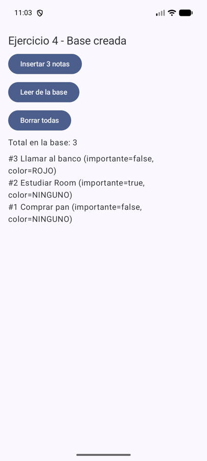
Consulta al archivo real copiado del emulador:
sqlite> SELECT name FROM sqlite_master WHERE type='table'; android_metadata | notas | sqlite_sequence | room_master_table sqlite> PRAGMA user_version; -> 1 sqlite> SELECT id, titulo, importante, colorEtiqueta FROM notas; 1 Comprar pan 0 NINGUNO 2 Estudiar Room 1 NINGUNO 3 Llamar al banco 0 ROJO
1. ¿Qué representa version = 1?
La versión del esquema, guardada en el archivo (PRAGMA user_version). Al cambiar el esquema se sube y se migra.
2. ¿Relación entre AppDatabase, el archivo SQLite y el DAO?
Archivo = los datos; AppDatabase = la puerta de entrada que conoce el esquema; DAO = las operaciones que se obtienen de ella.
3. ¿Por qué una única instancia?
Es cara, cada una abre su conexión, y la invalidación de los Flow es por instancia.
4. ¿Database Inspector es parte de la app final?
No: es de Android Studio, no se empaqueta en el APK.
data/local/AppDatabase.kt; apertura física: NotasApp.kt.Consigna: Formulario con título, contenido, importante, Guardar y mensaje. Insertar fuera del hilo principal. Validar: título no vacío, recortar espacios, evitar duplicados por doble toque.
Rama: ej05-alta-compose
trim() saca los espacios de los extremos: “ Hola ” queda “Hola”.creadaEn lo pone el código (System.currentTimeMillis()) justo antes de insertar: no es un campo del formulario.guardando = true). Sin eso, dos toques rápidos crean dos filas iguales.rememberCoroutineScope() da corrutinas atadas a la pantalla; se cancelan si la pantalla desaparece. Más adelante el lugar correcto es el ViewModel.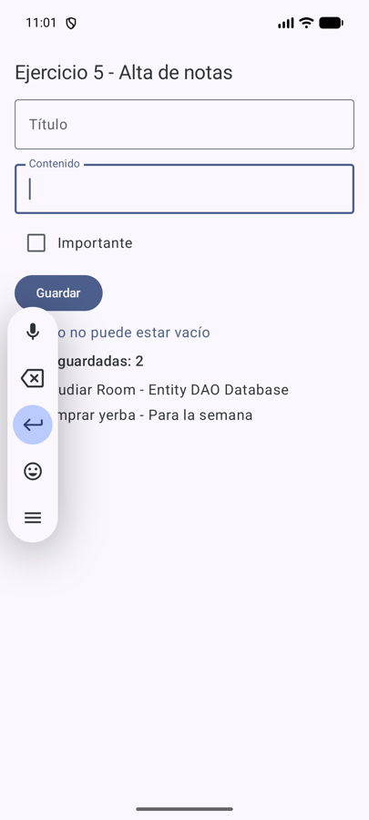
sqlite> SELECT id, titulo, contenido FROM notas; 1 Comprar yerba Para la semana 2 Estudiar Room Entity DAO Database (el intento con título vacío no está)
1. ¿Qué dato de la UI no debería terminar en la tabla?
El estado de la pantalla: texto a medio escribir, el mensaje “Guardada”, el flag guardando.
2. ¿Dónde se genera creadaEn y por qué?
Al guardar, con System.currentTimeMillis(): tiene que ser el momento real del guardado.
3. ¿Qué señal indica que la inserción terminó bien?
El Long que devuelve insertar(): un id > 0. Se muestra en el mensaje.
4. ¿Riesgo de lanzar corrutinas en cualquier lado?
Que sigan vivas con la pantalla muerta o se lancen varias veces (duplicados). Hay que usar un scope atado al ciclo de vida.
Consigna: El DAO expone Flow<List<NotaEntity>>; la pantalla lo muestra en una LazyColumn que se actualiza sola. Desafío: estado vacío sin lista paralela.
Rama: ej06-flow
List es una foto; Flow es una película: la foto no se entera de cambios, la película sí.Flow no lleva suspend: no espera un resultado, devuelve un canal al que uno se suscribe.collectAsStateWithLifecycle() convierte el Flow en algo que Compose observa, y deja de escuchar en segundo plano.notas.isEmpty(), la misma lista.@Query("SELECT * FROM notas ORDER BY creadaEn DESC")
fun observarNotas(): Flow<List<NotaEntity>>
// en la pantalla
val notas by dao.observarNotas().collectAsStateWithLifecycle(initialValue = emptyList())
if (notas.isEmpty()) Text("Todavía no hay notas")
LazyColumn { items(notas, key = { it.id }) { ... } }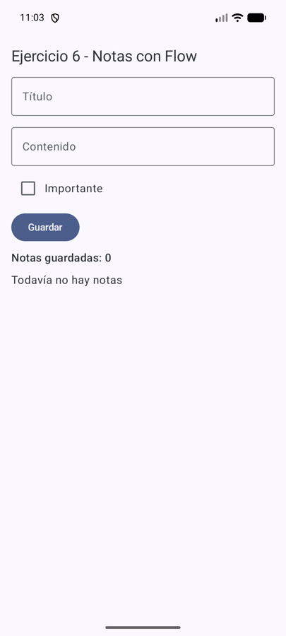
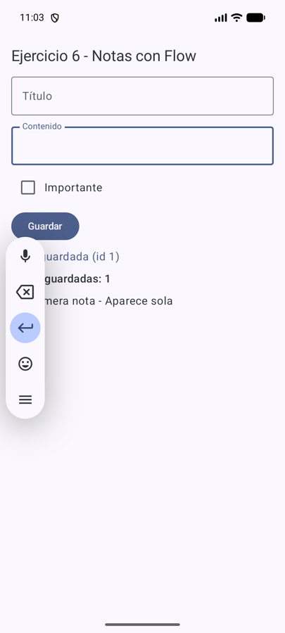
Cadena completa: la tabla cambia → Room invalida el Flow → emite la lista nueva → collectAsStateWithLifecycle actualiza el State → la LazyColumn se recompone.
1. ¿Diferencia entre Flow<List> y List?
List es el resultado de un momento; Flow emite una lista nueva cada vez que la tabla cambia.
2. ¿Room vuelve a ejecutar la consulta?
Sí, mientras alguien recolecte el Flow, cada vez que se invalida una tabla que la consulta lee.
3. ¿Es lo mismo un Flow que un estado de Compose?
No: Flow es de corrutinas; el State de Compose avisa que hay que recomponer. collectAsState… los conecta.
4. ¿Qué hace collectAsStateWithLifecycle?
Recolecta, guarda el último valor en un State, dispara recomposición y pausa en segundo plano.
Consigna: Agregar @Update y @Delete; editar una nota existente y eliminar con confirmación. Comprobar que editar no crea otra fila. Desafío: Deshacer.
Rama: ej07-crud
@Update busca la fila por la clave primaria del objeto: por eso se edita con nota.copy(titulo = ...), que conserva el id.@Update, no actualiza nada (no existe la fila 0).@Update suspend fun actualizar(nota: NotaEntity): Int // filas modificadas @Delete suspend fun eliminar(nota: NotaEntity): Int dao.actualizar(nota.copy(titulo = nuevoTitulo)) // mismo id → misma fila
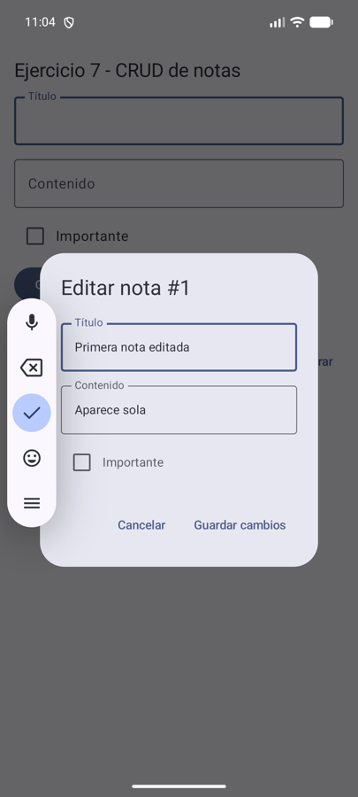
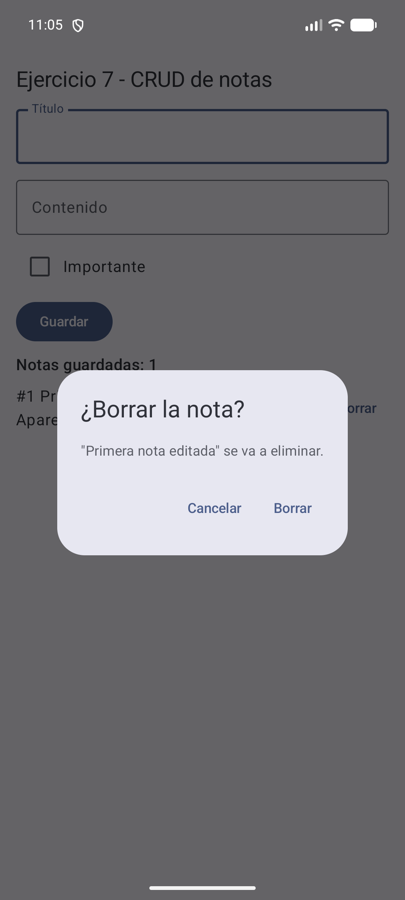
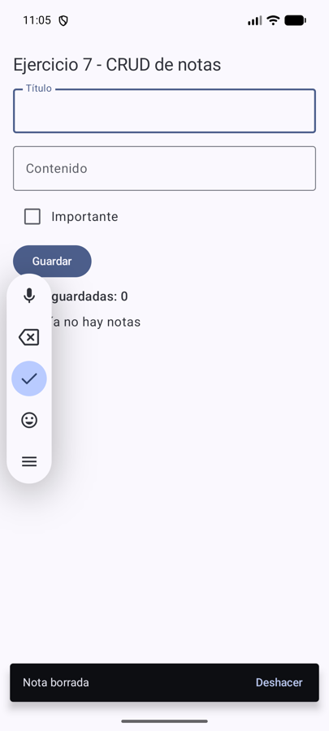
Editar "Primera nota" → id sigue siendo 1, sigue habiendo 1 fila Borrar → SELECT count(*) = 0 ; Deshacer → vuelve "1 | Primera nota editada"
1. ¿Cómo sabe @Update qué fila modificar?
Por la PK del objeto: UPDATE notas SET … WHERE id = :id.
2. ¿Y si el objeto editado tiene otro id?
Pisaría otra fila; con un id inexistente no modifica nada (devuelve 0).
3. ¿Borrar directo o pedir confirmación?
Confirmar (o deshacer): borrar es destructivo y un toque accidental es fácil. Se hicieron las dos.
4. ¿Qué podría vivir solo en memoria?
Qué nota se edita, si el diálogo está abierto, el borrador y la nota guardada para Deshacer.
Consigna: Buscador por título, solo importantes, orden por fecha y contadores (total e importantes), todo resuelto en SQL.
Rama: ej08-consultas
LIKE '%' || :texto || '%' significa “contiene el texto”. || une textos en SQL.:texto es un parámetro: Room lo pasa por separado (no lo pega en el SQL), lo que evita inyección SQL.COUNT(*) cuenta filas en la base: los contadores no se llevan “a mano”.androidTest que usan una base en memoria descartable.@Query("""
SELECT * FROM notas
WHERE titulo LIKE '%' || :texto || '%'
AND (:soloImportantes = 0 OR importante = 1)
ORDER BY CASE WHEN :ascendente = 1 THEN creadaEn END ASC,
CASE WHEN :ascendente = 0 THEN creadaEn END DESC
""")
fun filtrar(texto: String, soloImportantes: Boolean, ascendente: Boolean): Flow<List<NotaEntity>>
@Query("SELECT COUNT(*) FROM notas") fun observarCantidad(): Flow<Int>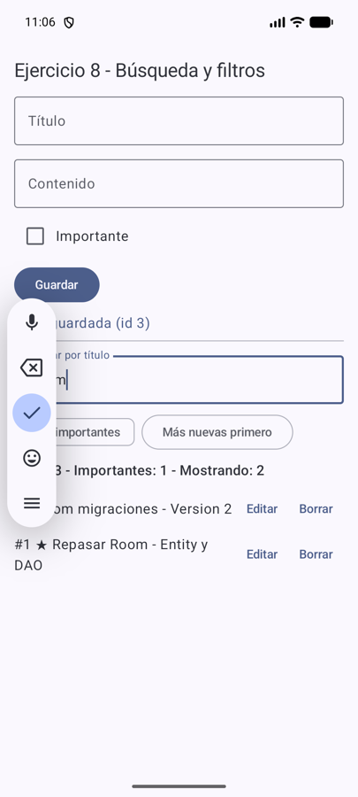
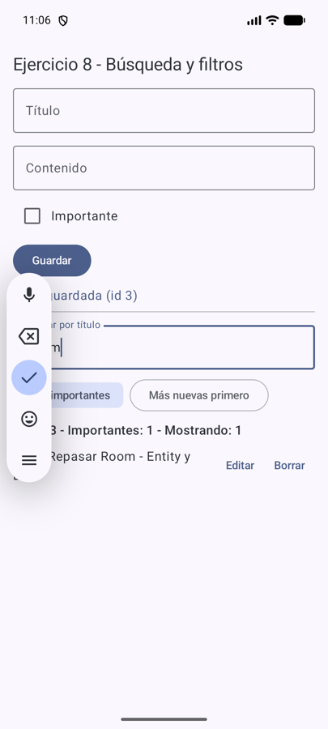
Tests instrumentados (NotaDaoTest): 4/4 ✅ en el emulador.
1. ¿Ventaja de filtrar en SQL?
El motor descarta filas (y puede usar índices); con filter se cargan todas a memoria.
2. ¿Cómo entra :texto?
Como argumento enlazado (bind): Room no concatena el String, evita inyección.
3. ¿Ordenar en SQL vs en memoria?
En SQL ordena el motor (puede usar un índice) y el Flow ya llega ordenado.
4. ¿Qué consulta se beneficiaría de un índice?
El ORDER BY creadaEn. LIKE '%x%' con comodín adelante no usa índices comunes.
COUNT(*).Consigna: Reorganizar: Compose UI → ViewModel → Repository → DAO → Room. El Repository recibe el DAO por constructor; la UI no llama al DAO. Desafío: interfaz + implementación.
Rama: ej09-repository-viewmodel
flatMapLatest: cuando cambia el texto de búsqueda, deja la consulta anterior y empieza la nueva.stateIn convierte el Flow en StateFlow con un valor inicial para que la pantalla siempre tenga algo que mostrar.IDA: Guardar → viewModel.guardarNota() → valida → repositorio.agregar() → dao.insertar() → SQLite
VUELTA: SQLite cambia → Room re-emite el Flow → repositorio.observarNotas() →
flatMapLatest + stateIn en el ViewModel → collectAsStateWithLifecycle → LazyColumn
interface NotaRepository { fun observarNotas(...): Flow<List<NotaEntity>>; suspend fun agregar(...) ... }
class NotaRepositoryImpl(private val notaDao: NotaDao) : NotaRepository { ... } // recibe el DAOLa interfaz está en data/repository/NotaRepository.kt y la implementación en NotaRepositoryImpl.kt. Tests: 4/4 ✅.
1. ¿Qué gana y qué cuesta la separación?
Gana: la UI no conoce el DAO, cada capa una responsabilidad, estado que sobrevive a la rotación, más fácil de probar. Cuesta: más archivos y métodos que solo delegan.
2. ¿El Repository tiene que existir siempre?
No; si solo reenvía llamadas no aporta. Acá genera creadaEn, arma la entidad y sería el lugar para una fuente remota.
3. ¿Quién decide si un título vacío es válido?
El ViewModel: es una regla de entrada de usuario y arma el mensaje.
4. Con red y Room, ¿quién coordina?
El Repository: Room como fuente de verdad y la red para refrescar.
Consigna: Agregar codigoExterno que no se repita (índice único), elegir estrategia de conflicto y un índice no único justificado.
Rama: ej10-restricciones-indices
"" sí es un valor: por eso el texto en blanco se convierte en null.@Entity(tableName = "notas",
indices = [Index(value = ["codigoExterno"], unique = true),
Index(value = ["creadaEn"])]) // todas las consultas ordenan por creadaEn
@Insert(onConflict = OnConflictStrategy.IGNORE)
suspend fun insertar(nota: NotaEntity): Long // -1 si viola la restricción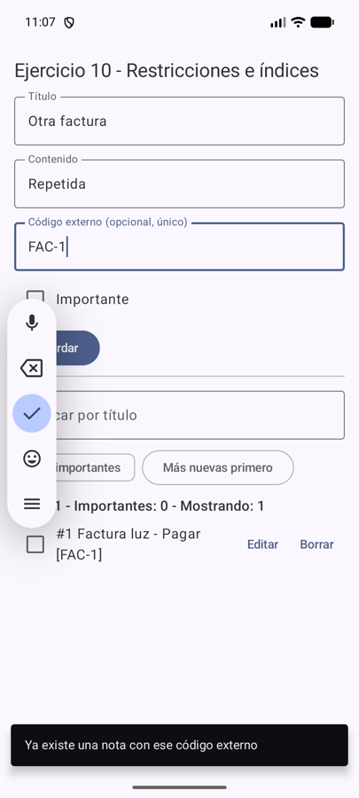
sqlite> SELECT id, titulo, codigoExterno FROM notas; -> 1 | Factura luz | FAC-1 (una sola) sqlite> índices de notas: CREATE UNIQUE INDEX index_notas_codigoExterno ON notas (codigoExterno) CREATE INDEX index_notas_creadaEn ON notas (creadaEn)
Tests: 8/8 ✅ (incluye insertar dos veces el mismo código con ABORT, IGNORE y REPLACE).
1. ¿Índice único = clave primaria?
No: la PK identifica la fila, es una sola y no admite NULL; un índice único solo evita repetidos.
2. ¿Problema de REPLACE por comodidad?
Pierde la fila anterior sin avisar, cambia el id y puede disparar borrados en cascada.
3. ¿Los índices mejoran todo gratis?
No: cuestan espacio y escrituras más lentas.
4. ¿Cómo comprobar que la restricción se cumple?
Con un test que inserta dos veces el mismo valor (y en la base real, arriba).
creadaEn justificado porque todas las consultas ordenan por esa columna.Consigna: Agregar CategoriaEntity; una categoría tiene muchas notas. Clave foránea, clase con @Embedded + @Relation. Desafío: política de borrado.
Rama: ej11-relacion-uno-a-muchos
categorias. Cada nota puede apuntar a una categoría. Si se borra una categoría, sus notas no se borran: quedan “sin categoría”.notas.categoriaId apunta a categorias.id.SET_NULL: al borrar la categoría, las notas quedan con categoriaId = NULL. CASCADE las borraría; RESTRICT impediría borrar.CategoriaConNotas no es una tabla: es una clase de lectura que Room arma juntando las dos.categoriaId es nullable: una nota puede existir sin categoría.ForeignKey(entity = CategoriaEntity::class, parentColumns = ["id"],
childColumns = ["categoriaId"], onDelete = ForeignKey.SET_NULL)
data class CategoriaConNotas(
@Embedded val categoria: CategoriaEntity,
@Relation(parentColumn = "id", entityColumn = "categoriaId") val notas: List<NotaEntity>
)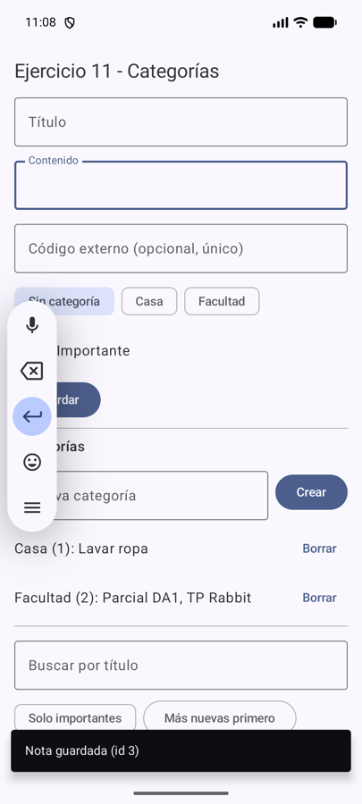
Antes: 1 Parcial DA1 → Facultad | 2 TP Rabbit → Facultad | 3 Lavar ropa → Casa Borrar "Facultad": sqlite> SELECT id, titulo, categoriaId FROM notas; 1 Parcial DA1 (NULL) ← la nota sigue, sin categoría 2 TP Rabbit (NULL) 3 Lavar ropa 2
Tests: 12/12 ✅ (incluye el efecto de SET_NULL).
1. ¿Por qué no guardar la lista de notas en una columna?
Rompe el modelo relacional: no se puede consultar ni filtrar, no hay integridad y hay que reescribir toda la lista.
2. ¿Dónde queda la clave foránea?
En notas.categoriaId, el lado “muchos”.
3. ¿Qué pasa con las notas al borrar una categoría?
Quedan sin categoría (SET_NULL): decisión de producto para no perder notas.
4. ¿Entidad vs clase de resultado relacional?
La entidad tiene tabla y se inserta; CategoriaConNotas solo se lee.
Consigna: Reemplazar un campo primitivo por un tipo más expresivo (enum Prioridad), crear el @TypeConverter y verificar qué se guardó.
Rama: ej12-typeconverters
Prioridad.ALTA a texto ("ALTA") al guardar, y al revés al leer.@TypeConverters(Converters::class) en la base.enum class Prioridad { BAJA, MEDIA, ALTA } // domain/model/Prioridad.kt
class Converters {
@TypeConverter fun prioridadAString(valor: Prioridad): String = valor.name
@TypeConverter fun stringAPrioridad(valor: String): Prioridad =
Prioridad.entries.firstOrNull { it.name == valor } ?: Prioridad.MEDIA
}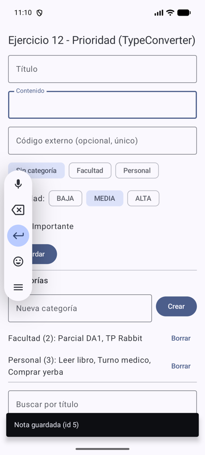
sqlite> SELECT id, titulo, prioridad, typeof(prioridad) FROM notas; 1 Parcial DA1 ALTA text 2 TP Rabbit MEDIA text 3 Leer libro BAJA text
Tests: 14/14 ✅ (ConvertersTest verifica el valor físico).
1. ¿Room guarda el enum completo?
No: solo un String con el nombre de la constante.
2. ¿Y si ALTA se renombra a URGENTE?
Las filas viejas dicen “ALTA”: hace falta migrar (UPDATE … SET prioridad = 'URGENTE').
3. ¿Fecha como número o como texto?
Número: compacto, ordena bien, sin ambigüedad de zona. Texto: legible pero ocupa más y depende del formato.
4. ¿Qué resuelve el TypeConverter y qué no?
Resuelve la traducción en ambos sentidos; no resuelve la evolución de los datos ni valida el valor guardado.
text) se verificó en la base.Consigna: Operación de varios pasos: fusionar categorías (mover notas y borrar la vacía). Versión sin transacción vs con @Transaction; lectura relacional transaccional.
Rama: ej13-transacciones
fallarEntrePasos = true, solo en tests).@Transaction.@Transaction
open suspend fun fusionar(origen: CategoriaEntity, destinoId: Int, fallarEntrePasos: Boolean = false) {
moverNotas(origen.id, destinoId) // paso 1: UPDATE notas
if (fallarEntrePasos) throw IllegalStateException("Fallo forzado entre los dos pasos")
eliminar(origen) // paso 2: DELETE categoría
}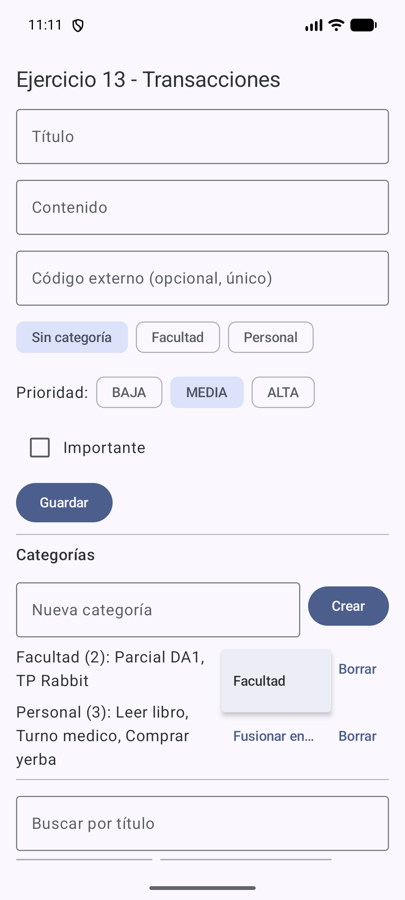
Fusionar "Personal" (3 notas) en "Facultad" (2 notas): sqlite> SELECT * FROM categorias; -> 1 | Facultad (Personal ya no existe) sqlite> SELECT id, titulo, categoriaId FROM notas; -> las 5 notas con categoriaId = 1
Tests: 17/17 ✅. Con fallo forzado: con transacción las notas vuelven a su categoría (rollback); sin transacción quedan movidas y la categoría origen sigue existiendo.
1. ¿Qué significa atómica?
Que se hace completa o no se hace.
2. ¿Una transacción sirve solo para escrituras?
No: también para lecturas que necesitan consistencia entre varias consultas.
3. ¿Qué error deja la base válida para SQLite pero inválida para la app?
Notas movidas y la categoría origen sin borrar: ninguna restricción se rompe, pero “fusionar” quedó a medias.
4. ¿Qué conviene probar forzando un fallo?
El punto exacto entre los dos pasos: con transacción, rollback; sin ella, estado a medias.
Consigna: Base con datos en versión 1; agregar archivada: Boolean (falso para las existentes), subir a versión 2, escribir y registrar la migración y comprobar que nada se perdió.
Rama: ej14-migraciones
fallbackToDestructiveMigration() “arregla” el error borrando todos los datos: no es la solución.DEFAULT 0 es el valor que reciben las filas viejas; sin DEFAULT, SQLite no deja agregar una columna NOT NULL a una tabla con datos.@Database(entities = [NotaEntity::class, CategoriaEntity::class], version = 2, exportSchema = true)
val MIGRATION_1_2 = object : Migration(1, 2) {
override fun migrate(db: SupportSQLiteDatabase) {
db.execSQL("ALTER TABLE notas ADD COLUMN archivada INTEGER NOT NULL DEFAULT 0")
}
}
Room.databaseBuilder(...).addMigrations(MIGRATION_1_2).build() // en NotasAppPrueba real (sin desinstalar): se cargaron 5 notas con la rama 13 (versión 1) y se instaló la rama 14 encima.
ANTES (rama 13): PRAGMA user_version -> 1 filas -> 5
columnas: id titulo contenido importante creadaEn colorEtiqueta codigoExterno categoriaId prioridad
DESPUÉS (rama 14, misma instalación):
sqlite> PRAGMA user_version; -> 2
sqlite> SELECT id, titulo, prioridad, archivada FROM notas;
1 Parcial DA1 ALTA 0
2 TP Rabbit MEDIA 0
3 Leer libro BAJA 0
4 Turno medico ALTA 0
5 Comprar yerba BAJA 0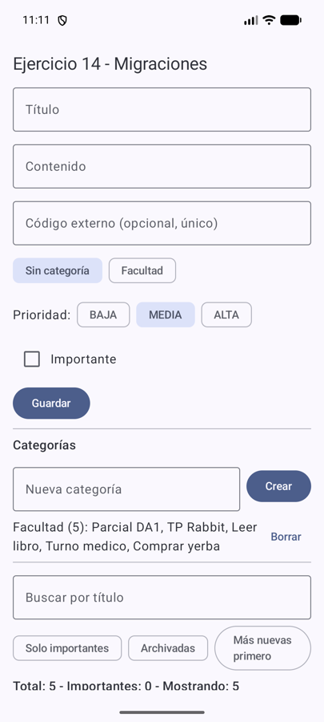
Además, MigrationTest crea una base v1 con el esquema exportado (app/schemas/…/1.json), la migra y valida: tests 19/19 ✅.
1. ¿Por qué cambiar una Entity puede requerir migración aunque compile?
El código compila contra la clase, pero la base del celular tiene el esquema viejo; Room los compara al abrir.
2. ¿Y si se sube la versión sin camino de migración?
Room lanza IllegalStateException; la salida destructiva borraría los datos.
3. ¿Qué valor deben tener las filas viejas en la columna nueva?
0 (no archivadas): el comportamiento que tenían antes.
4. ¿Por qué la migración es diseño de datos?
Decide qué pasa con la información de personas reales al actualizar; no es un detalle de build.